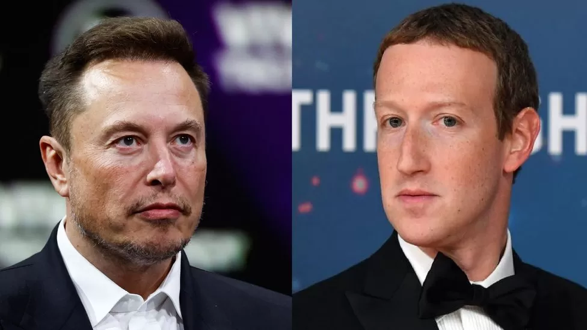

Elon Musk vs Mark Zuckerberg
Italy could host Musk v Zuckerberg cage fight

Elon Musk and Mark Zuckerberg have been goading each other about the showdown since June
By Davide Ghiglione
BBC News, copy by Kazi Minhaz Bangla news
BBC Bangla News, Rome
A planned cage fight between tech leaders Elon Musk and Mark Zuckerberg could now take place in Italy, and have an ancient Rome theme.
In the story's latest twist, Italy's culture minister on Friday said that he had spoken to Mr Musk about hosting the showdown as a charity event.
The billionaire CEOs of Tesla and Meta (formerly Facebook) have been goading each other into the fight since June.
If it goes ahead, millions are expected to be donated to children's hospitals.
However, Mr Zuckerberg has said no date has been agreed so far.
Detailing his vision on social media platform X (previously known as Twitter), Mr Musk said he had spoken to both Italy's prime minister and its culture minister.
"They have agreed on an epic location," he wrote. "Everything in camera frame will be ancient Rome, so nothing modern at all."
However the capital Rome, and its iconic Colosseum - where legendary Gladiator fights were held in ancient times - have been ruled out.
Italy's Culture Minister Gennaro Sangiuliano said in a statement that the "great charity" event would resonate with the country's historical significance while also preserving its cultural heritage.
"I had a long and friendly conversation with Elon Musk, we talked about our shared passion for ancient Roman history," Mr Sangiuliano said in a statement.
"We are thinking about how to organise a great charity and historical evocation event, respecting, and fully protecting the setting... It will not take place in Rome."
Mr Sangiuliano also said that a "substantial amount, many millions of euros" is expected to be donated to two Italian children's hospitals as a result of hosting the cage match.
Writing on Threads, the platform seen as a direct competitor to X, which he launched last month, Mark Zuckerberg said he has "been ready to fight since the day Elon challenged me", and if a date was ever agreed, "you'll hear it from me".
"Until then, please assume anything he says has not been agreed on."
Seeming to take a dig at the floated plans, Mr Zuckerberg said that when he competes, he wants "to do it in a way that puts a spotlight on the elite athletes at the top of the game".
"You do that by working with professional (organisations) like the UFC or ONE [mixed martial arts organisations] to pull this off well and create a great card," he said.
Elon Musk, 52, and Mark Zuckerberg, 39 are two of the world's most high-profile technology billionaires.
The bizarre idea to fight each other started in June, when Mr Musk tweeted that he was "up for a cage fight" with Mr Zuckerberg.
The Meta CEO, who already has mixed martial arts (MMA) training and has recently won jiu-jitsu tournaments, simply responded with "send me location".
Related Topics
Italy
Elon Musk